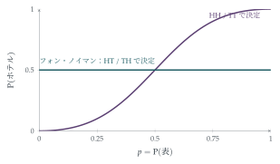

STEP I 2019、第11問
先に進む前に問題を読んでおこう。問題は、OCRが配布している2019年のSTEP問題一式（zipファイル）のSTEP Iに収録されている： www.ocr.org.uk/Images/696590-2019-past-papers.zip
導入
公平な決定を下さなければならないのに、手元にある硬貨は曲がっていて、どれほど偏っているのかもわからない。それでも公平な選択はできるだろうか。1951年にフォン・ノイマン（John von Neumann）が与えた答えはこうである：硬貨を2回投げよ。HT が出ればホテル、TH が出れば喫茶店を選び、HH か TT が出たらもう2回投げる。HT と TH はどちらも確率が \(pq\) であるから、\(p\) がどんな値であっても、この決定は完全に公平である。
この問題の手順はその逆で、HH と TT で決定する。これは速いが公平ではない（ホテルが選ばれる確率は \(\frac{p^2}{p^2 + q^2}\)）。この問題は、どんな硬貨であってもこの手順が長くはかからないことを示す。2つの手順を比べると、乱数生成における基本的なトレードオフ、すなわち速さと公平さの兼ね合いが見えてくる。
取りかかる前に
1回のラウンドで決定が下される確率はいくらか。決定が下されない確率はどうか。\(2pq\) がとりうる最大の値はいくらか。
硬貨の結果が一致すれば決定が下され、その確率は \(p^2 + q^2\) である。そうでなければ、確率 \(2pq\) で続行となる。\(pq = p(1 - p) \leq \frac14\)（等号は \(p = \frac12\) のとき）であるから、\(2pq \leq \frac12\) が成り立つ。
順を追って解く
段階 1 第 \(n\) ラウンドでの決定
各ラウンドは独立（independent）である。第 \(n\) ラウンドで決定が下されるには、\(n - 1\) 回続けて結果が一致せず、その次に一致しなければならない： \[\mathrm{P}(\text{決定するラウンドが } n) = (2pq)^{n-1}(p^2 + q^2). \qed\]
段階 2 第 \(n\) ラウンドまでの決定
最初の \(n\) ラウンドで決定が下されない確率はいくらか。
\(n\) ラウンドで決定が下されない確率は \((2pq)^n \leq \bigl(\frac12\bigr)^n\) であるから、\(p\) がどんな値であっても、第 \(n\) ラウンドまでに決定が下される確率は少なくとも \(1 - \frac{1}{2^n}\) である。■
段階 3 3人の場合
第1ラウンドで表が2枚、裏が1枚出たあと、3人目は裏の硬貨をひっくり返して表にする。第2ラウンドで決定が下されるには何が起こらなければならないか。裏が2枚、表が1枚の場合はどうか。
第1ラウンドで決定が下される確率は \(p^3 + q^3\) である。そうでなければ、2枚の硬貨が一致し、1枚だけが異なる。多数派が表であった場合（確率 \(3p^2q\)）、異なる硬貨は表に返されるので、第2ラウンドで決定するには残りの2人が表を出す必要があり、その確率は \(p^2\) である（全員が裏になることはもはやありえない）。同様に、多数派が裏であった場合（確率 \(3pq^2\)）、決定には裏が2枚出る必要があり、その確率は \(q^2\) である。したがって \[\mathrm{P}(\text{決定までに要するラウンド数が高々 } 2) = p^3 + q^3 + 3p^2q\cdot p^2 + 3pq^2\cdot q^2.\]
すべてを \(s = pq\) を用いて表せ。（\(p + q = 1\) を用いよ。）
\(p^3 + q^3 = (p + q)^3 - 3pq(p + q) = 1 - 3s\) であり、\(3p^4q + 3pq^4 = 3s(p^3 + q^3) = 3s(1 - 3s)\) である。よって、\(s \leq \frac14\) より \[\mathrm{P} = 1 - 3s + 3s - 9s^2 = 1 - 9s^2 \geq 1 - \frac{9}{16} = \frac{7}{16},\] となる。■
振り返り
余事象（complement）。「第 \(n\) ラウンドまでに少なくとも1回」は、\(1 -\)（「\(n\) ラウンドで一度も起こらない」）として考えるのがいちばん簡単であった。
最悪の場合を評価する。未知の \(p\) は、不等式 \(pq \leq \frac14\) によって処理した。
対称関数（symmetric function）。\(p\) と \(q\) について対称な式は、\(p + q = 1\) と \(pq\) を用いて表すと簡単になる。
背後にある数学
フォン・ノイマンのトリック
この問題の手順は速いが偏り（bias）がある。フォン・ノイマンの手順は公平である：2回投げ、HT か TH なら決定し、HH か TT なら繰り返す。各試行が成功する確率は \(2pq\) なので、平均して \(\frac{1}{2pq}\) 回の試行を要し、硬貨が大きく偏っているときには時間がかかる（図 12.9.1）。この問題の手順は1ラウンドあたり確率 \(p^2 + q^2 \geq \frac12\) で決定を下すが、\(p > \frac12\) のときにはその答えがホテルに偏る。

ランダムネスの抽出
フォン・ノイマンのトリックは、最初の乱数抽出器（randomness extractor）である。これは不完全なランダムネスを完全なランダムネスに変える手順である。この方法は無駄が多い（2回投げるごとに得られる公平なビットは高々1つで、1つも得られないことも多い）。より優れた方法では、捨てられた HH や TT の組を再利用して、硬貨がもつランダムネスのほぼすべてを抽出する。このランダムネスの量は、1回の投げあたり \(-p\log_2p - q\log_2q\) ビットというエントロピー（entropy）で測られる。抽出器は、コンピュータのハードウェア乱数生成器で用いられている。ハードウェア乱数生成器は、予測不可能だが偏りのある物理的なノイズを集め、それを暗号のために偏りのないビットに変換しなければならないのである。
フォン・ノイマンは、1951年の論文 “Various techniques used in connection with random digits”（乱数に関連して用いられるさまざまな技法）でこのトリックを述べた。この論文が書かれたのは、彼と同僚たちが核兵器の設計のために、最初期のコンピュータ・シミュレーションのいくつか（「モンテカルロ法（Monte Carlo method）」）を実行していた時期である。同じ論文の中で、彼は算術によって乱数を生成することについて、有名な言葉を残している：「算術的な方法で乱数を作り出そうと考える者は、言うまでもなく罪の状態にある。」
思考のスキル
パラメータが未知であるときは、その値によらず確率が等しくなる事象を探し、それにもとづいて決定せよ。
HT と TH は同じ確率 \(pq\) をもつので、両者を比べれば \(p\) は完全に消える。大学では、同じ考え方が統計学の枢軸量（pivotal quantity）や実験計画（design of experiments）に現れる。実験計画では、無作為化（randomisation）と対称性によって未知の効果が打ち消される。
次の一歩
ラウンド数の期待値。小問 (i) の手順とフォン・ノイマンの手順のそれぞれについて、ラウンド数の期待値（expected value）を求めよ。どのような \(p\) に対して、フォン・ノイマンの手順のほうが遅くなるか。
公平な三者択一。偏りのある硬貨を用いて、3つの選択肢のうち1つを、それぞれちょうど確率 \(\frac13\) で選ぶ手順を考案せよ。
公平な硬貨から偏ったさいころを。公平な硬貨を用いて、表が出る確率がちょうど \(\frac13\) である硬貨を模擬する手順を考案せよ。投げる回数の期待値はいくらか。
再び3人の場合。小問 (ii) において、3人がホテルに行く確率を \(p\) の関数として求めよ。\(p = \frac12\) のとき、この手順は公平か。
さらに学ぶために
John von Neumann, “Various techniques used in connection with random digits”, National Bureau of Standards Applied Mathematics Series 12 (1951). 短く、有名な論文である。
Donald Knuth, The Art of Computer Programming, Vol. 2 (Addison-Wesley)。第3章で乱数を扱っている。
Michael Mitzenmacher & Eli Upfal, Probability and Computing (Cambridge University Press)。ランダムネスの抽出とエントロピーを扱っている。